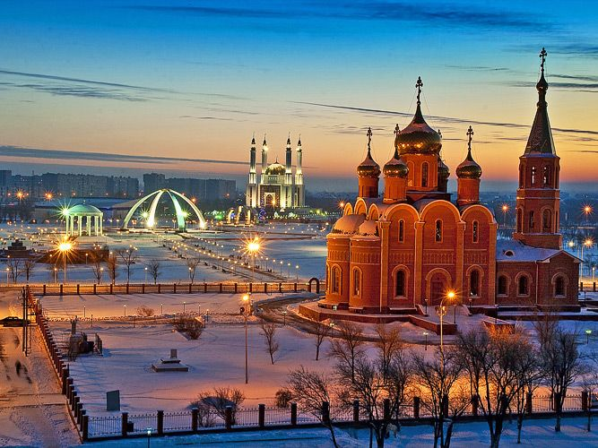
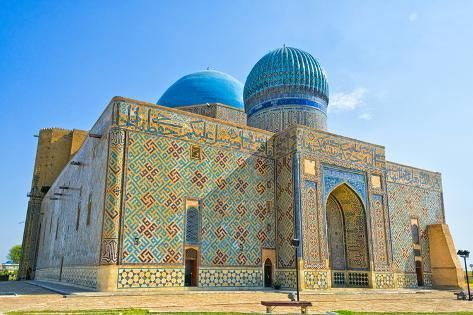
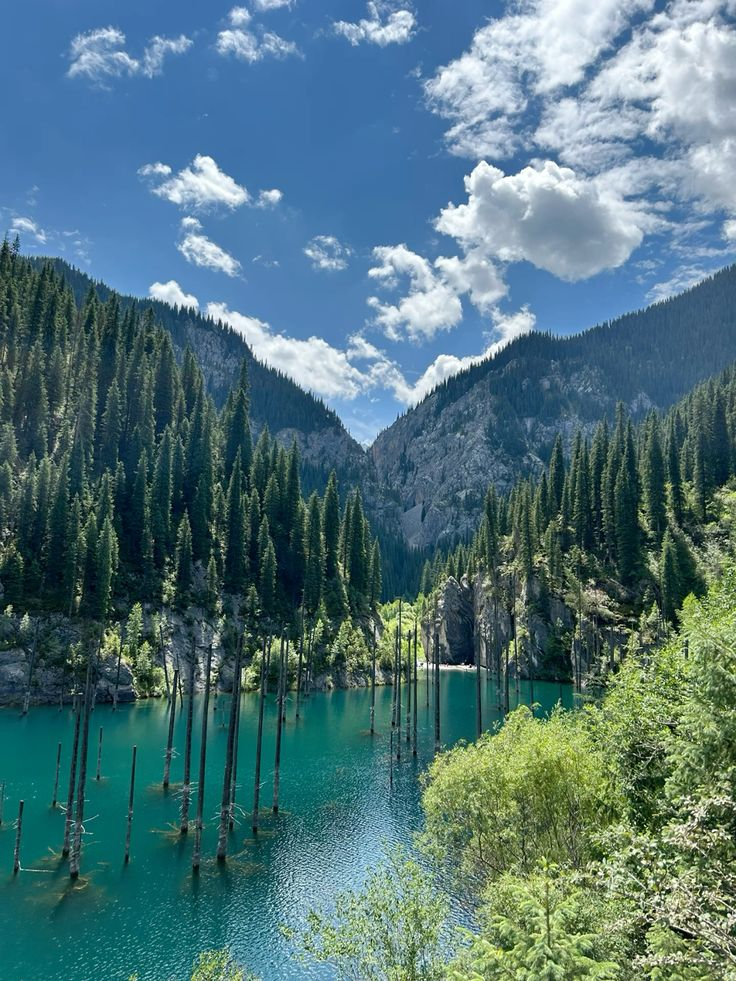

The best places to visit in Kazakhstan

Astana
Astana, the capital city of Kazakhstan, is a modern metropolis known for its futuristic architecture and vibrant culture. Key attractions include the "Bayterek" Tower, "Khan Shatyr" Entertainment Center, and the "Palace of Peace and Reconciliation".

Almaty
Almaty is a city at the foot of majestic mountains, famous for its green appearance, "Kok Tobe" and the alpine skating rink "Medeo".
Aktobe
Aktobe is a city in western Kazakhstan known for its cultural diversity and historical significance. Key attractions include the "Regional Museum of Local History", "Central Park of the first President" and Central Stadium - "Kobylandy Batyr".
Turkestan
Turkestan is an ancient city in the south of Kazakhstan, the spiritual center of the Turkic world. The mausoleum of Khoja Ahmed Yasawi, a UNESCO site, is located here. Today, the city is actively developing and attracts tourists from all over the world.
Almaty Oblysy
Almaty Oblysy, or Almaty Region, is a picturesque area surrounding the city of Almaty, known for its stunning natural landscapes. Key attractions include the "Charyn Canyon", "Big Almaty Lake", and the "Ile-Alatau National Park".